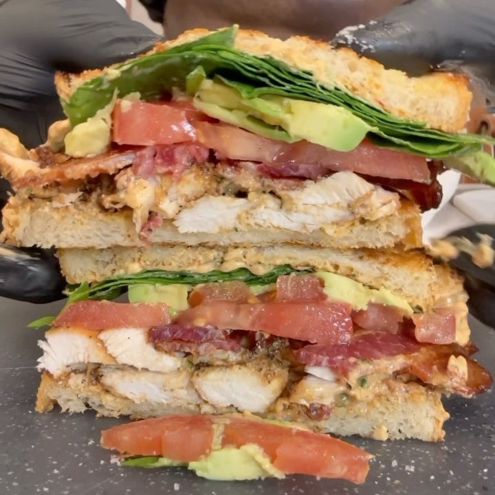

Sandwich Pollo Chipotle
Ingredientes:
- 2 rebanadas de pan de masa fermentada
- 127.5 g pechuga de Pollo
- 25 g de aguacate
- Provolone (ligero opcional)
- 1-2 cucharadas de salsa de proteína chipotle
- Espinacas
- 2 rebanadas de tocino magro
- 50 g Mayonesa Light
- CIlantro
- Ajo
- Chipotle en adobo
Condimentos:
- Ajo
- Sal
- Pimienta
- Chipotle en polvo
- Condimento de cebolla
Instrucciones:
- Rebanar aguacate y tomate
- En un bowl, marinar el pollo con ajo, sal, pimienta, paprika y chipotle
- Asar pollo a fuego alto de 2 a 3 mins por cada lado
- Para la salsa, licuar cilantro, ajo, chipotle en adobo, mayonesa
- Tostar pan en sartén y después añadir el pollo, tocino, tomate aguacate y finalmente la salsa